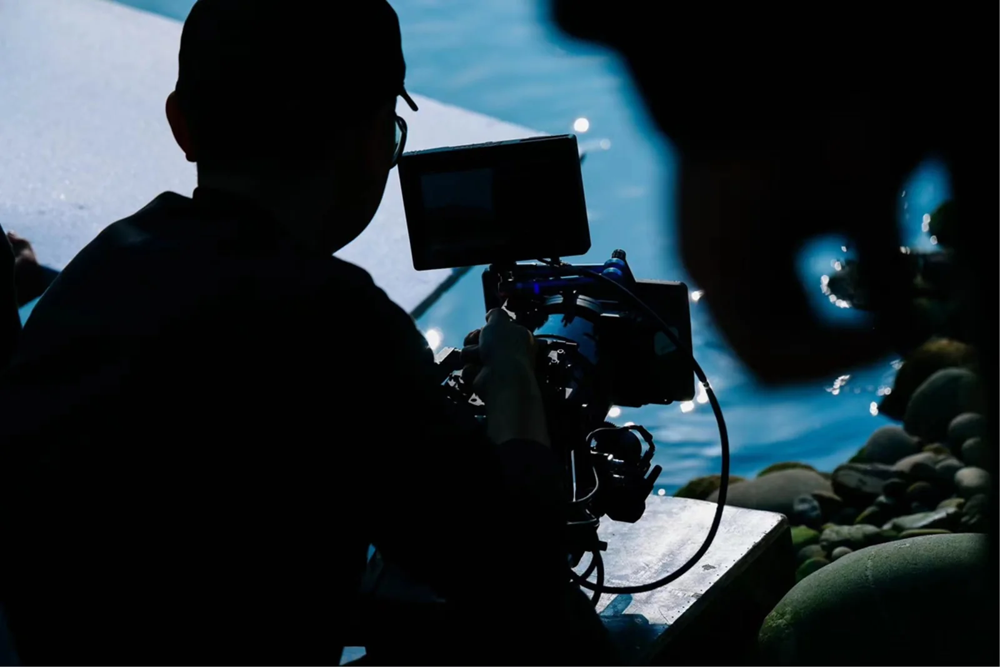
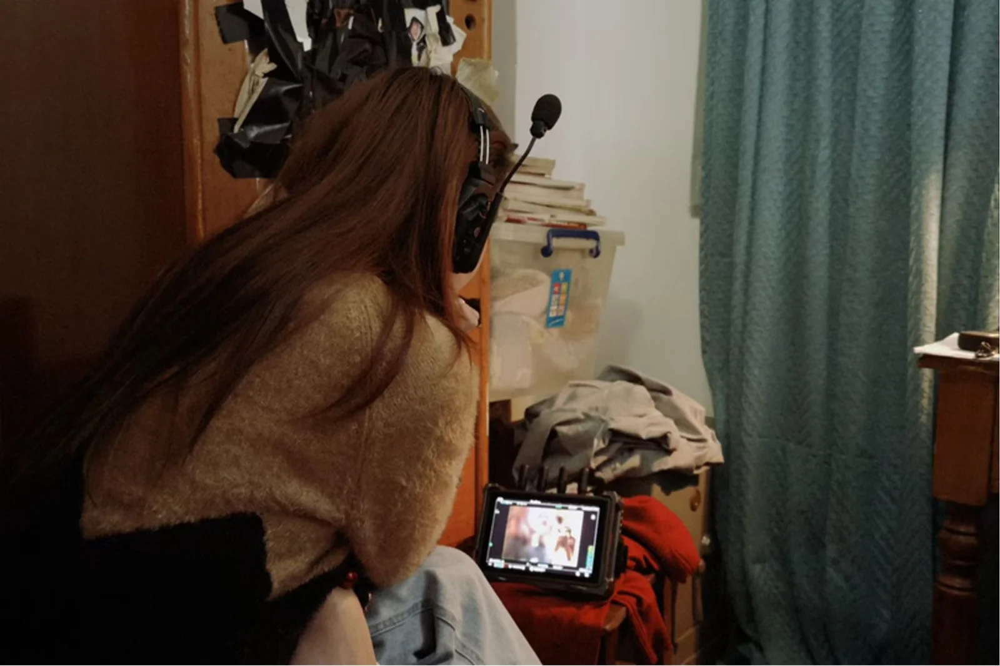

BEHIND THE SCENES / PRODUCTION
幕后与现场记录。
镜头之外，也记录创作如何发生。
以幕后影像记录拍摄现场、设备协作与剧组工作状态，呈现影像项目从准备到执行的过程。
项目背景
学生短片 / 幕后记录
我的工作
现场拍摄 · 团队协作
可查看的产出
拍摄现场与制作过程
01 / PROJECT WORK
现场协作
参与拍摄排程、场地协调与现场后勤，记录拍摄现场的工作流程与团队协作。
02 / PROCESS & OUTPUT
幕后影像
通过花絮与现场照片保留拍摄过程中的真实细节，作为项目制作过程的视觉档案。
03 / NOTES
现场记录
团队协作

WORK / SELECTED OUTPUT
镜头之外，作品如何完成。

